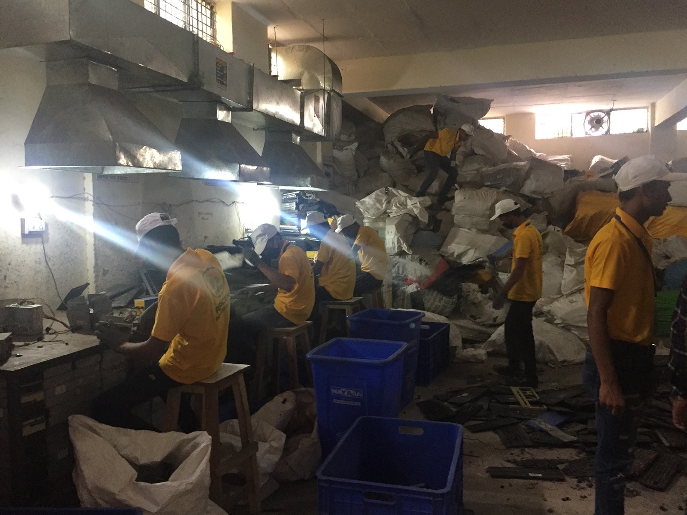

The Value of Waste
Value transformations in the e-waste sphere in India’s green transition

Photo: Julia Perczel
About the Project
E-waste is a charismatic form of waste with symbolic and material significance as the detritus of a quintessentially twenty-first century technology, as well as the urban mine for valuable strategic resources. It is within this context that the stakes of what is the right thing to do with e-waste and how it is worked out in practice are drawn up. The book casts an anthropological focus on the calculations and the social experimentations in a market setting where the right thing also always must be worked out against the right price.
Seven years of research provides the backbone to the proposed book within the orbit of a startup pseudonymously called Sahih Kaam, operating in Delhi and across the country. It foregrounds the struggles over the value of waste by the for-profit environmental startup and its suppliers as they work under the shifting regimes of the newly introduced extended producer responsibility (EPR) rules. The exchange relationship between startup and traders provides occasion to explore deep seated notions about class and caste written into the environmental advocacy narratives of e-waste’s polluting practices. On the one side there is the network of scrap traders from the Muslim biradari or caste called the Teli Maliks engaged in crooked polluting practices, while on the other is middle-class corporate India wanting to clean up the e-waste sphere. E-waste in its material and bureaucratic forms winds its way through the popular Muslim neighbourhoods of the other side of the Yamuna in Delhi’s northeast to corporate offices the financial hub of Gurgaon. The book reveals the urban morphing of caste relations by tracing the value transformation between e-waste as part of the caste specific strategies of scrap traders in pursuit of social mobility and the unmarked sphere of environmental responsibility in the Indian capital.
Related Publications
E-waste is toxic, but for whom? The body politics of knowing toxic flows in Delhi
Environment and Planning C: Politics and Space, 42(1), 64–79.
Re-Enchantment with the Waste of the World: Expressing Futures and Representing Wastelands in Chen Qiufan's Waste Tide
Revenant.
Where is toxicity located? Side glances through fieldwork in a toxic place
Anthropology Today, 37(4), 27–30.